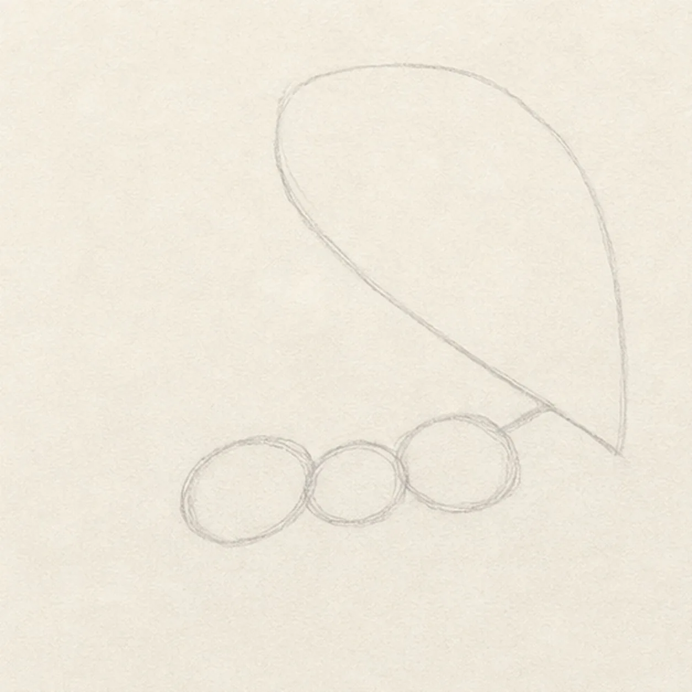
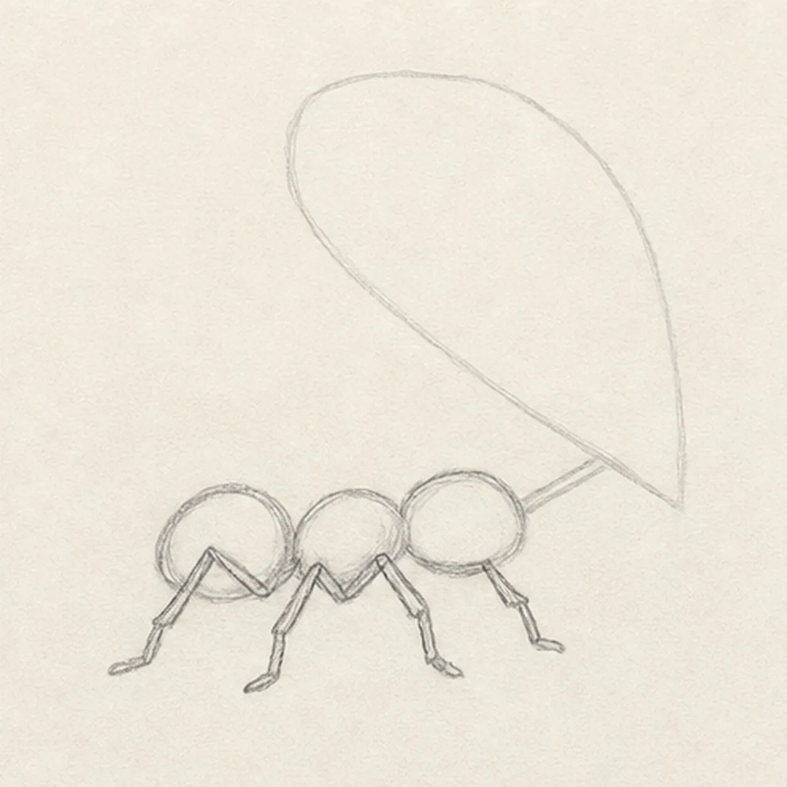
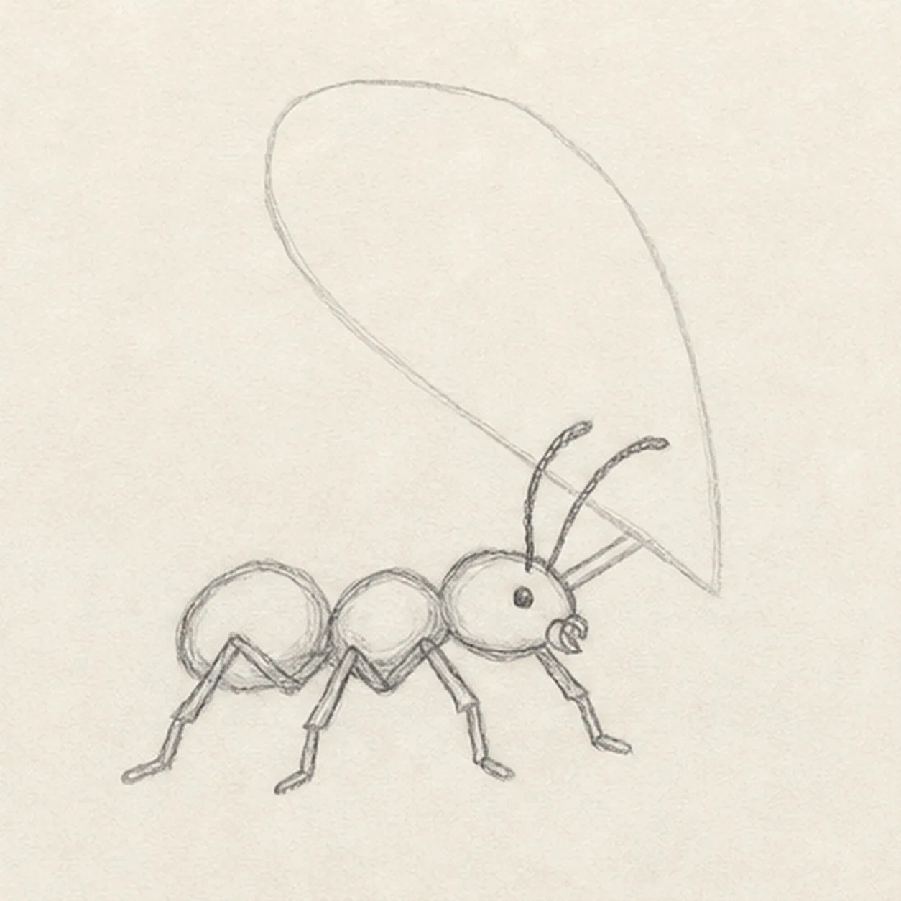
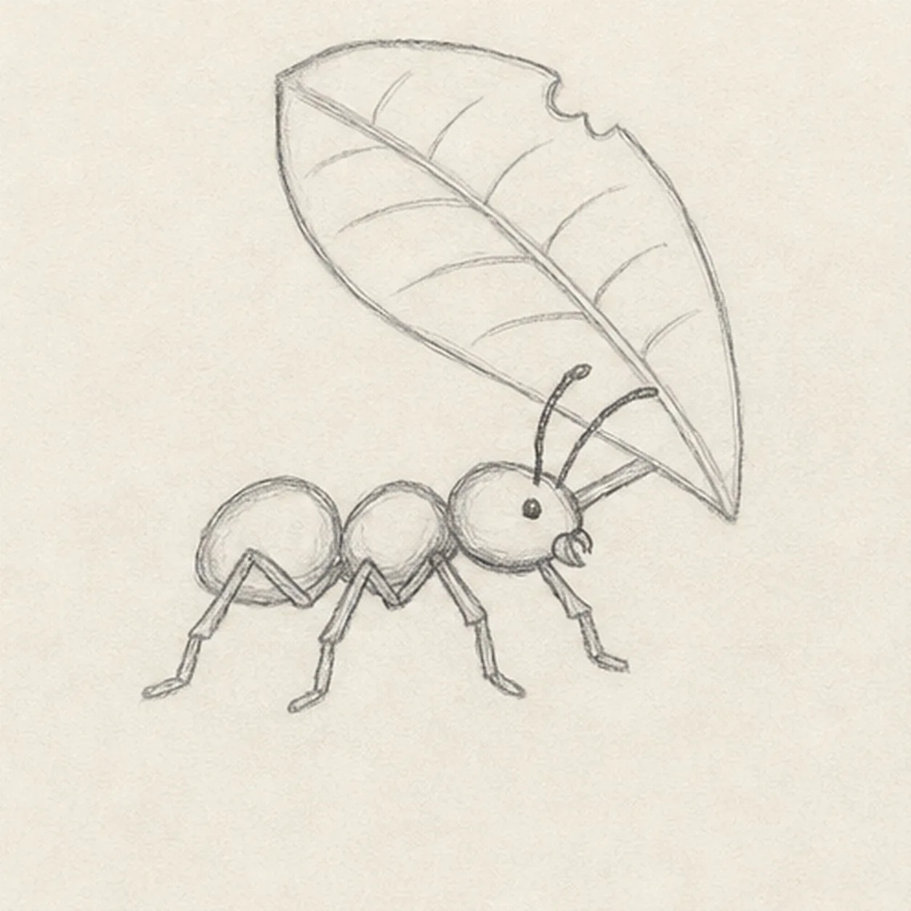
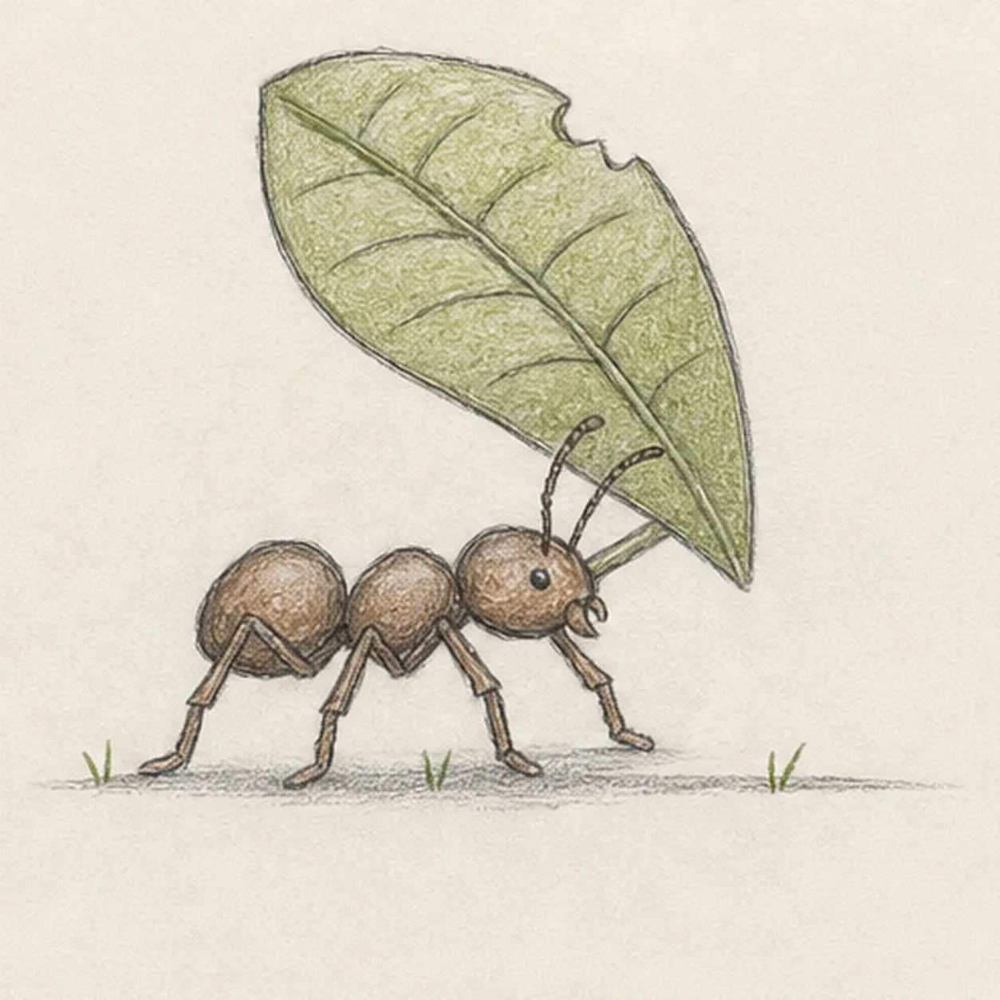

From the archive
Let's draw an ant carrying a leaf
Treat this as one small practice round: build the subject lightly, notice the shapes, then darken only the lines that help the finished sketch.
-
01

Map the ant and its leaf
Place three pale body beads on one right-facing walking axis, then sketch the oversized leaf footprint and a light stem route aimed toward the ant's mouth.
Sketch tip: Ghost the body axis first and keep the leaf footprint pale. Reserve the space between leaf and ant instead of filling it with detail that the stem or antennae will later cross.
-
02

Set the six-leg walking rhythm
Wrap the three body guides with a simple ant silhouette, then add exactly six bent legs in three alternating pairs beneath the load.
Sketch tip: Mark all six attachment points before drawing the feet. Compare the triangular gaps between neighboring legs; varied gaps make the ant look like it is walking rather than standing on a comb.
-
03

Give the ant a determined face
Add one small eye, exactly two curved antennae, and simple mandibles that visibly grip the established leaf stem.
Sketch tip: Rotate the page for the antenna curves and pull each in one relaxed pass. Trace the stem into the mandibles with your finger so the leaf never appears to float.
-
04

Shape and vein the carried leaf
Clarify the reserved leaf contour, center vein, five restrained side-vein pairs, one small bite notch, and the existing stem connection.
Sketch tip: Draw the center vein first, then angle each side-vein pair toward the edge. Your leaf can be rounder or narrower, but keep one clear stem connecting it to the ant.
-
05

Ground and color the tiny traveler
Add a short broken ground line, exactly three grass ticks, small contact shadows, moss-green leaf texture, and warm-brown pencil on the established ant body.
Sketch tip: Use the side of the graphite lightly beneath planted feet, then pull green strokes along the leaf veins. Leave warm paper showing through both colors so the sketch stays lively.
-
06

Strengthen the determined finish
Darken the keeper contours and clarify the established three-part body, six legs, two antennae, face, leaf, veins, bite notch, ground marks, restrained colors, and shadows.
Sketch tip: Count six legs, trace the stem from leaf to mouth, and stop while the pose still feels light. Extra ants, a nest, or a full garden would turn this tiny journey into a different lesson.